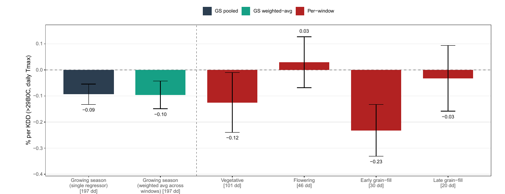

01
Climate Response of Second-Season Corn in Brazil
Using municipal yields, daily weather, and region-specific phenological calendars for 2003–2023, we estimate how extreme heat and water deficit affect Brazil’s second-season corn. One additional killing degree day above 29°C lowers yields by about 0.10%, and a uniform 1°C warming reduces predicted yields by 8.2%.
